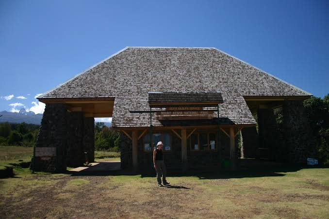
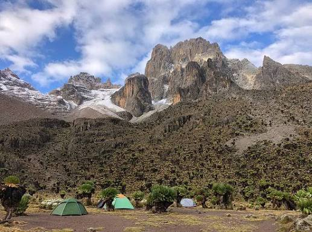

4-Day Sirimon Mount Kenya Itinerary
A fast-paced ascent of Mount Kenya via the Sirimon Route, climbing through forest and moorland to Point Lenana before descending back to Nairobi.

Nairobi → Sirimon Gate → Old Moses Camp
Depart Nairobi in the morning and drive to Nanyuki, continuing to the Sirimon Gate at the edge of Mount Kenya National Park. Begin trekking through montane forest and bamboo zones, climbing steadily to Old Moses Camp on the edge of the moorland.
- Morning departure from Nairobi
- Drive to Nanyuki and Sirimon Gate
- Trek through forest to the moorland zone
- Arrive at Old Moses Camp (3,300m)
- Dinner and overnight stay

Old Moses Camp → Shipton's Camp
Trek across the open moorland of Mackinder's Valley, with spectacular views of the Central Peaks growing closer throughout the day. Arrive at Shipton's Camp in the afternoon to rest and acclimatize ahead of the summit attempt.
- Breakfast at Old Moses Camp
- Trek through Mackinder's Valley
- Views of the Central Peaks
- Arrive at Shipton's Camp (4,200m)
- Early dinner and rest before summit night

Summit Point Lenana → Descend to Sirimon Gate → Nanyuki
Set off in the early hours for the summit push to Point Lenana (4,985m), timed to arrive for sunrise over the Central Peaks. After celebrating at the summit, descend back through Old Moses Camp to the Sirimon Gate and drive to Nanyuki for a well-earned rest.
- Pre-dawn departure from Shipton's Camp
- Summit Point Lenana for sunrise
- Descend to Old Moses Camp
- Continue to Sirimon Gate
- Drive to Nanyuki for dinner and overnight stay

Nanyuki → Nairobi
After breakfast, depart Nanyuki and travel back to Nairobi, crossing the equator and passing through the scenic Kenyan countryside, arriving in Nairobi in the afternoon with unforgettable memories of your Mount Kenya summit trek.
- Breakfast and check-out
- Scenic drive back to Nairobi
- Equator crossing stop
- Drop-off at hotel or airport